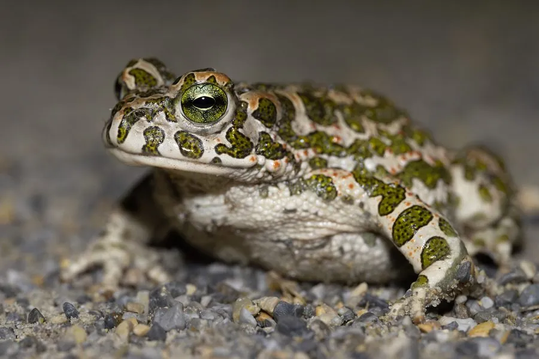

两栖动物 · 动物界
绿蟾蜍 Bufotes viridis

欧亚大陆广布的蟾蜍，皮肤呈绿色并布满深色斑点，耳后腺能分泌毒液，繁殖期在水塘中产下长串卵带。
- 分类
- 门脊索动物门纲两栖纲目无尾目科蟾蜍科属绿蟾蜍属
- 栖息环境
- 草原、荒漠绿洲、农田、果园及城镇边缘的静水环境
- 地理分布
- 欧洲、北非、西亚、中亚及中国新疆等地
- 保护级别
- IUCN 无危（LC）；中国“三有”保护动物
物种志
绿蟾蜍体长 6–9 厘米，雌蛙可达 10 厘米。皮肤粗糙，背面呈浅绿色、橄榄绿色或灰绿色，散布不规则的深绿色或褐色斑点，腹面灰白色；耳后腺发达，四肢粗短，趾间蹼不发达，善爬行而不善跳跃。
它广泛分布于欧洲、北非、西亚和中亚，在中国见于新疆等地，栖息于草原、荒漠绿洲、农田和城镇边缘，耐旱能力强。夜间捕食昆虫、蜘蛛、蠕虫和蜗牛，遇险时鼓胀身体并分泌耳后腺毒液。繁殖期在春季，雄蛙聚集在池塘、水沟中鸣叫，雌蛙产下长串胶质卵带，蝌蚪约两个月完成变态。绿蟾蜍能大量捕食农业害虫，对环境适应力强，但湿地减少和农药使用仍影响局部种群。
形态与习性
- 食性昆虫、蜘蛛、蠕虫和蜗牛
- 体长约 6–9 cm，雌蛙可达 10 cm
- 繁殖春季产下长串胶质卵带，蝌蚪约两个月变态
- 活动节律夜行性，白天藏在洞穴或草丛中
- 耐旱可在荒漠绿洲和城镇边缘生活
- 毒性耳后腺分泌毒液，接触后需洗手
趣味知识
- 绿蟾蜍的耳后腺能分泌毒液，受到威胁时会让身体鼓胀。
- 它产下的卵呈长串胶质带状，缠绕在水草上。
- 绿蟾蜍耐旱能力强，可在荒漠绿洲和城镇边缘生活。